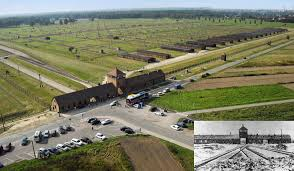
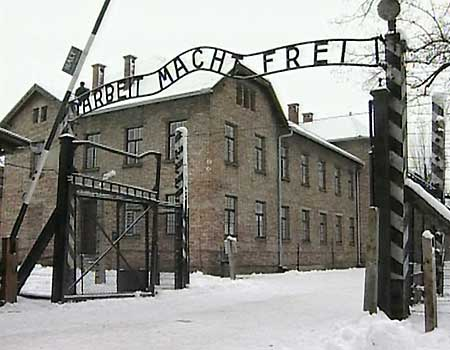

O Campo de Concentração de Aushwitz ficou conhecido por ser o local de extermínio dos judeus praticado pelos nazistas durante a Segunda Guerra Mundial.
Desde o momento em que Adolf Hitler assumiu a liderança política da Alemanha, o Reich começou a proclamar a necessidade de se exterminar alguns grupos indesejáveis da sociedade alemã para que o país pudesse se recuperar das humilhações sofridas após a Primeira Guerra Mundial e das consequências da crise econômica de 1929. O momento era muito crítico na Alemanha dos anos 1930, os alemães viram em Hitler a esperança de uma recuperação da nação e depositaram nele toda a confiança. De fato, Adolf Hitler conseguiu reerguer a Alemanha, tirando-a do cenário catastrófico que se encontrava, mas sempre apresentando uma postura radical.
Em 1939, a renascida Alemanha, sob o comando de Adolf Hitler, rompeu de vez o clima de instabilidade presente na Europa e uma nova guerra mundial teve início. Desta vez, as implicações da guerra seriam muito maiores e mais abrangentes que a primeira. A partir de 1940, os alemães começaram a construir instalações que serviriam como campos de concentração e de extermínio de inimigos e grupos indesejáveis da sociedade. Estas instalações foram construídas nas terras polonesas ocupadas pelos alemães, foram três os campos principais auxiliados por mais trinta e nove. Localizavam-se nas cidades de Auschwitz e Birkenau, próximas da capital polonesa Cracóvia.
Os Campos de Concentração de Auschwitz, ou Auschwitz-Birkenau para ser mais completo, tornaram-se símbolos do Holocausto causado pelos nazistas durante a Segunda Guerra. Mas esses campos não foram criados somente para exterminar pessoas, suas funções se dividiam entre os três principais campos que recebiam o auxílio dos outros trinta e nove.
O campo de concentração Auschwitz I foi inaugurado no dia 20 de maio de 1940, foi o primeiro. Era o centro administrativo dos campos, é nele que se localiza a famosa placa com a frase “Arbeit Macht Frei” (O trabalho liberta). O campo serviu mais para utilização do trabalho forçado dos prisioneiros, mas foi nele que os nazistas testaram a primeira câmara de gás. O teste inicial com o gás Zyklon B matou 850 prisioneiros polacos e russos, em setembro de 1941. A experiência foi considerada um sucesso e utilizada no campo em 1941 e 1942, além de serem construídas câmaras também em outros campos. De todos os prisioneiros que passaram por Auschwitz I, apenas 300 conseguiram fugir. Por outro lado, aproximadamente 70 mil prisioneiros polacos e soviéticos morreram neste campo.
O campo de concentração Auschwitz II, construído em Birkenau em 1941 localizava-se a apenas 3 Km de Auschwitz I. O objetivo principal do novo campo era efetivamente o do extermínio. É este o campo mais conhecido pelas pessoas e onde mais se matou pessoas. Era equipado com quatro crematórios e câmaras de gás, as quais podiam receber, cada uma, cerca de 2.500 pessoas por vez. As mortes em grande quantidade começaram a acontecer no ano de 1942, em Auschwitz II morreram aproximadamente um milhão de judeus e 19 mil ciganos.
Já o campo de concentração Auschwitz III, o terceiro entre os três principais, fui utilizado especialmente para trabalho escravo pela empresa IG Farben. Iniciou suas atividades em 1942. Os demais trinta e nove campos auxiliares eram relacionados à indústria alemã para produção militar, metalúrgica e mineradora.
Todos os campos de concentração eram controlados e dirigidos pela SS, sob o comando de Heinrich Himmler. Aproximadamente 7.300 membros da SS trabalharam nos campos de concentração. Quando o final da guerra se aproximou, os nazistas destruíram as câmaras de gás em Birkenau, em novembro de 1944, e no ano seguinte começaram a evacuar os campos, tudo para esconder o que acontecia nas instalações dos campos de concentração. Em 27 de janeiro de 1945, o exército dos soviéticos liberou ainda cerca de 7.500 prisioneiros.